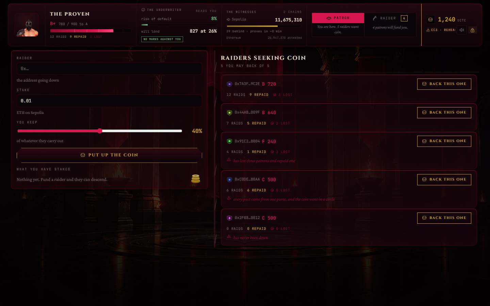
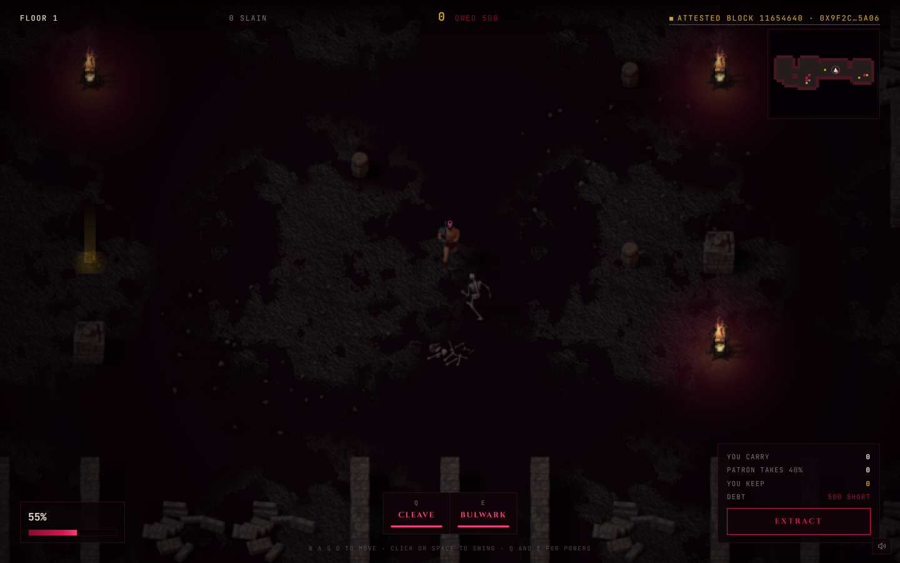

· The problem
Onchain lending is stuck on overcollateralization. It works, but it only serves people who already have the money. That is a liquidity tool, not credit.
Real credit means being lent more than you can cover. That needs a reputation which is portable, public, and expensive to fake.
Credit scores live inside institutions, wallets are free to create, and reputation you mint between your own addresses is worth nothing.
A record that costs real money to build, cannot be farmed with two wallets, and survives without the app that wrote it.
· The solution
A patron stakes coin on Ethereum to fund a raider they have never met. The raider goes into a dungeon and decides when to turn back.
They split the haul.
Standing +28
The patron's coin is gone. All of it.
Standing −86, and the ledger writes their name next to the loss.
The loan is also the difficulty curve. The more of the patron's coin you are carrying, the faster the dungeon sends things at you. Take the chain out and the difficulty goes with it — this is not a shop bolted onto a game.
· The mechanic
| Standing | Must lock | of 0.1 tCTC |
|---|---|---|
| below 300 | 100% | 0.100 |
| 300 and up | 80% | 0.080 |
| 450 and up | 60% | 0.060 |
| 600 and up | 30% | 0.030 |
| 750 and up | 10% | 0.010 |
| 900 and up | nothing | — |
A fresh wallet opens at 500 and posts 60%. Reaching 900 means raids actually run and debts actually cleared, every one of them on chain.
By then your name is the collateral.
Walk out and the bond returns whole. Fall and it goes to the patron you cost — the only thing making a thrown raid cost the raider anything.
· Sybil resistance
Standing earned from the same patron halves every time that pair deals again, and stops entirely after five. Enforced in the contract, not the UI.
Reaching the top of the board costs ten distinct funded wallets and real Sepolia coin, every one of them visible on chain. A stake under 0.001 ETH buys no standing at all.
· Architecture
The vault holds the patron's coin and emits one event. It has never heard of Creditcoin.
Witnesses attest the Sepolia block. Once enough agree — about nine minutes — a proof can be built.
The precompile verifies the proof, refuses one already spent, and reads the payment out of it.
The patron's capital already lives on Ethereum, and asking them to bridge first would be a worse product. But a debt and a reputation must outlive the raid, be cheap to write, and be readable by anyone — Creditcoin's job.
Creditcoin cannot see Ethereum. USC is the only honest answer to that, and the whole credit system hangs off it.
· USC integration
PrecompileChainInfoProvider is polled for which chains are watched and how far the witnesses have got.
Every dungeon floor is seeded from the last attested Ethereum block. Nobody chooses that number — not us, not the player. The HUD names it.
ProofBuilder fetches the Merkle and continuity proof. TheLedger extends ASCBase, which calls the precompile at 0x…0FD2, refuses a spent query id, and reads the staked amount out of the proof — never from the messenger.
· The product

Types an address and the ledger answers — score, raids, repaid, lost, read live from Creditcoin before a single coin moves.

Locks the bond and decides when to turn back. The HUD names the attested Ethereum block this floor was carved from.
· Honesty
The fight happens in the player's browser, so the haul is reported, not proved. We would rather say that here than have it found. The ledger bounds it:
ceiling 1.0 tCTC (100× the stake, never below 100,000 coins)
claimed 1000000000000000001 wei
MoreThanTheDungeonHolds(pactId 4, claimed 1000000000000000001,
most 1000000000000000000)
One wei over the line, refused on chain — 0x19d2b34a…c77d. It costs the raider nothing but gas and strands nothing.
This bounds the lie; it does not end it. The real answer is replay — floors are seeded from an attested block, so a raid is deterministic and anyone can re-simulate it.
· Deployed, not mocked
0xcBB956Fa0358F53B9A83b78d6586a1fbB46fF64e
0xBd02a6a9f452217dE9d67B945CB995a6991D1cDD
| Every step, checkable without us | Transaction |
|---|---|
| A patron staked on Ethereum | 0x2ca92625…d640 |
| Attestcoin proved it, the pact sealed | 0xc2e73a8c…df04 |
| The raid settled, standing 500 → 528 | 0x53482ca5…8459 |
| A haul above the ceiling, refused | 0x19d2b34a…c77d |
| A replayed proof, refused by the query-id guard | 0xeedd1d2f…58bb |
· Status
blood-ledger-rosy.vercel.app — both testnets, house running serverless so an empty wallet can still get down the stairs.
Replay verification of the haul. Standing readable by any other Creditcoin contract — the record is already public and portable.